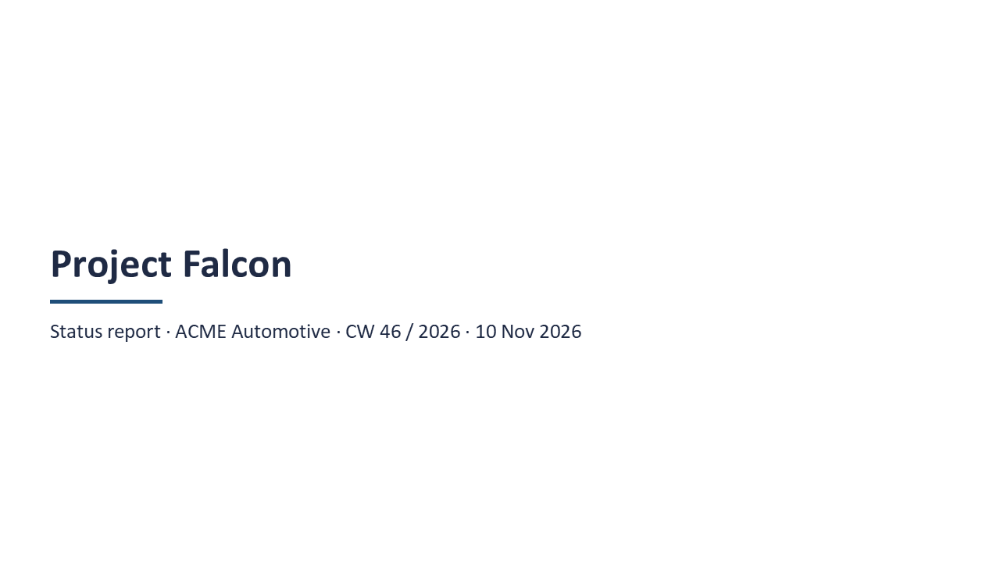
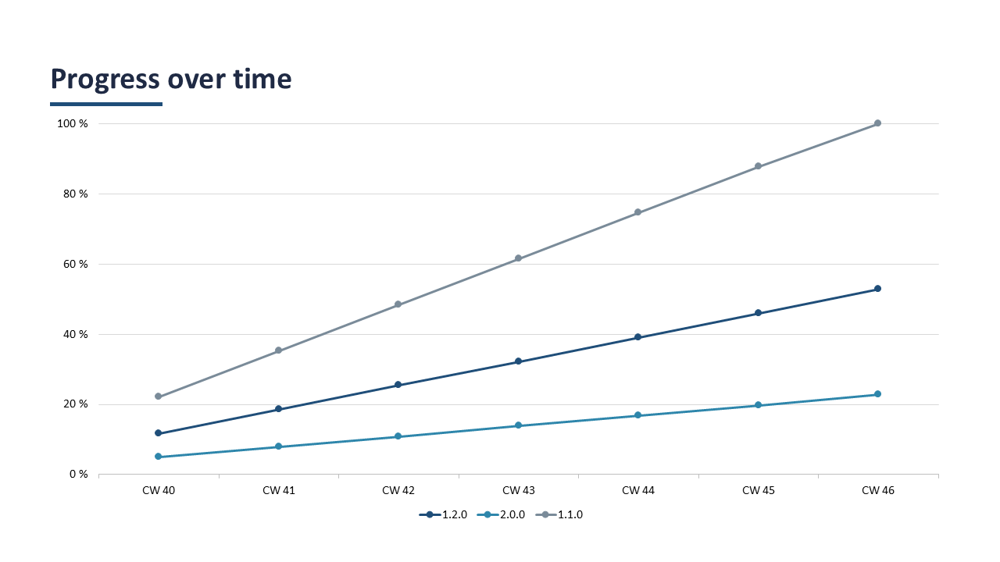
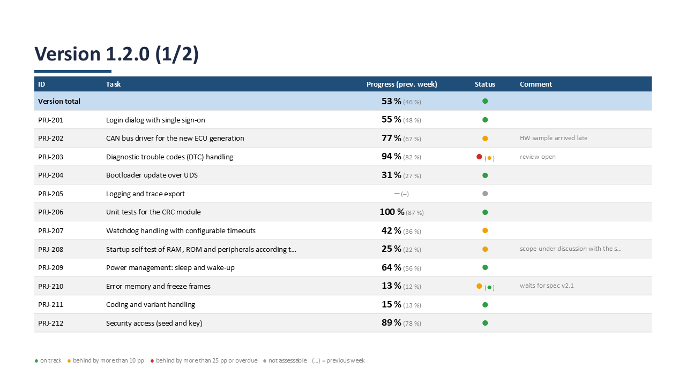
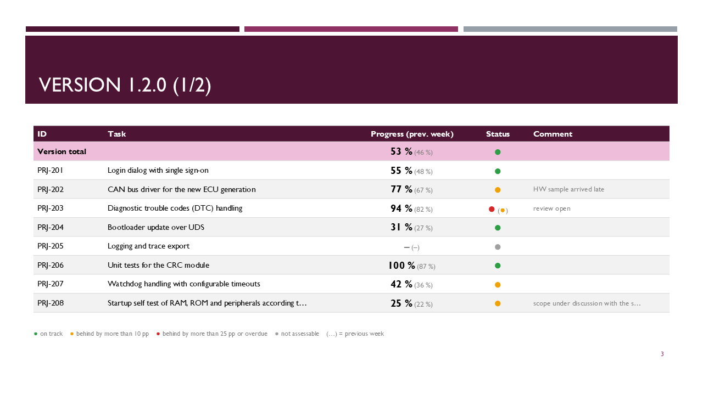

Von der Aufgabenliste in Excel zum fertigen Status-Deck für den Kundentermin. Einmal einrichten, danach jede Woche drei Handgriffe.
Das Tool in 80 Sekunden: einrichten, Aufgaben pflegen, Excel auf das Tool ziehen, Folien lesen. Ohne Ton, alle Erklärungen stehen im Bild.
Entpacke sw-status-report-0.9.0.zip an einen festen Ort, zum Beispiel C:\Tools\sw-status-report. Darin liegen vier Dateien:
statusreport.pyz: das eigentliche Tool, eine einzige Dateimake_report.cmd: der Startknopf, auf den du die Excel ziehstTasks.xlsx: eine leere Eingabe-Excel als VorlageREADME.md: die englische KurzreferenzInstalliert wird nichts, und Adminrechte brauchst du nicht.
Öffne die Eingabeaufforderung (Windows-Taste, cmd, Enter) und tippe:
py --versionErscheint Python 3.9 oder höher, passt alles. Kommt eine Fehlermeldung, probiere python --version. Wenn auch das nicht klappt, muss Python 3 installiert werden, da hilft die IT.
Lege pro Kundenprojekt einen eigenen Ordner an und kopiere Tasks.xlsx hinein. Öffne die Datei und trage im Blatt Settings mindestens Projekt und Kunde ein:
| Setting | Value | Description | |
|---|---|---|---|
| 2 | Project | Project Falcon | Titelfolie und Dateiname |
| 3 | Customer | ACME Automotive | Titelfolie |
| 4 | Report date | leer = heute | |
| 5 | Orange threshold (pp) | 10 | ab wie viel Rückstand orange |
| 6 | Red threshold (pp) | 25 | ab wie viel Rückstand rot |
| … | … | … | … |
| 12 | Template file | Kundenvorlage, siehe Teil 6 | |
| 15 | Footer text | Fußzeile, z. B. „ACME confidential“ |
Alle anderen Einstellungen haben sinnvolle Vorgaben, die Spalte Description erklärt jede davon.
Im Blatt Tasks steht pro Arbeitspaket eine Zeile. Die Spalten mit Stern sind Pflicht, Start und Due braucht die Ampel. Alles andere ist optional.
| ID | Title | Version | Owner | Start | Due | Estimate (h) | Spent (h) | Progress (%) | State | Light override | Comment | |
|---|---|---|---|---|---|---|---|---|---|---|---|---|
| 2 | #EXAMPLE-1 | Login dialog (example row …) | 1.2.0 | Anna | 2026-11-02 | 2026-11-27 | 3d | 10 | in progress | waiting for API | ||
| 3 | PRJ-201 | Login dialog with single sign-on | 1.2.0 | Anna | 2026-10-19 | 2026-11-27 | 80 | 44 | In Progress | |||
| 4 | PRJ-202 | CAN bus driver for the new ECU generation | 1.2.0 | Ben | 2026-10-01 | 2026-11-13 | 120 | 92 | In Progress | HW sample arrived late | ||
| 5 | PRJ-206 | Unit tests for the CRC module | 1.2.0 | Fay | 2026-10-05 | 2026-11-20 | 40 | 40 | 100 | Done | ||
| 6 | PRJ-210 | Error memory and freeze frames | 1.2.0 | Jana | 2026-10-26 | 2026-12-18 | 60 | 8 | In Progress | Orange | waits for spec v2.1 | |
| 7 | PRJ-301 | Architecture concept 2.0 | 2.0.0 | Anna | 2026-10-12 | 2026-12-18 | 120 | 40 | In Progress |
40) oder als 2d 4h (1 Tag = 8 h, 1 Woche = 5 Tage).# vor die ID, wie bei der Beispielzeile.Du arbeitest mit Polarion? Dann musst du die Tasks nicht abtippen, sondern fügst den Export ins Blatt Import ein, siehe Teil 5.
Speichere die Excel und schließe sie, denn ungespeicherte Änderungen sieht das Tool nicht. Dann ziehst du die Datei im Explorer mit der Maus auf make_report.cmd. Es öffnet sich ein Fenster:
Project: Project Falcon / ACME Automotive Report date: 2026-11-10 (CW 46/2026) Source: Tasks sheet Tasks: 22 in 3 version(s) Thresholds: orange > 10 pp, red > 25 pp behind History: 6 snapshot(s), previous week 2026-W45 (2026-11-03); trend CW 40 .. CW 46 (7 week(s)) Version 1.2.0 53 % (46 %) GREEN 15 task(s): 1 red, 4 orange, 9 green, 1 grey Version 2.0.0 23 % (20 %) ORANGE 4 task(s): 1 red, 1 green, 2 grey Version 1.1.0 100 % (88 %) GREEN 3 task(s): 3 green 0 error(s), 2 warning(s): warning Tasks row 9: PRJ-205: no progress (no Progress %, no done state, no Spent/Estimate); not counted in version 1.2.0 warning Tasks row 22: PRJ-303: no progress (no Progress %, no done state, no Spent/Estimate); not counted in version 2.0.0 Deck written: C:\Kunden\Falcon\Project Falcon Status 2026-W46.pptx (6 slides) Snapshot saved: C:\Kunden\Falcon\history\2026-W46.json Done. Drücken Sie eine beliebige Taste . . .
… (2).pptx.history gespeichert. Daraus kommen nächste Woche die Klammerwerte.Den Ordner history nicht löschen. Er ist das Gedächtnis des Tools. Ohne ihn fangen die Vorwochenwerte und das Trenddiagramm von vorn an. Ein zweiter Lauf in derselben Woche ersetzt nur die Werte dieser Woche.
Öffne das Deck in PowerPoint und schau kurz drüber. Was du auf den Folien siehst, erklärt der nächste Teil. Anpassen kannst du es wie jedes andere Deck. Dein nächster Lauf erzeugt aber eine neue Datei, Änderungen von Hand wandern also nicht mit.
Das Deck hat immer denselben Aufbau: Titelfolie, Trend, dann pro Softwareversion eine Tabelle. Wird eine Tabelle zu lang, geht sie auf einer Folgefolie weiter, zum Beispiel „Version 1.2.0 (1/2)“ und „(2/2)“.



Die Ampel vergleicht, wie weit eine Aufgabe ist, mit dem, wie weit sie nach Plan sein sollte. Der Soll-Wert ist der Anteil der Zeit von Start bis Due, der am Stichtag schon vergangen ist. Probier es aus:
Die Version bekommt den Durchschnitt ihrer Aufgaben, gewichtet nach geschätzten Stunden. Eine 80-h-Aufgabe zählt also doppelt so viel wie eine 40-h-Aufgabe. Fehlt bei einer Aufgabe die Schätzung, wird einfach gemittelt. Die Versionsampel vergleicht diese gewichteten Summen. Deshalb kann eine Version grün sein, obwohl einzelne Aufgaben orange sind.
Rechnet die Ampel anders, als du es erwartest? Dann ziehe die Excel mit --check auf das Tool, siehe Spickzettel. Das Tool listet dann jede Aufgabe mit Ist, Soll und Ampel auf und schreibt nichts.
Eine leere Time-Spent-Zelle im Export zählt als 0 h. Weil Polarion kein Startdatum hat, rechnet das Tool den Start aus Due minus Aufwand. Alte .xls-Exporte vorher in Excel als .xlsx speichern.
.pptx oder .potx) neben deine Excel.layout "Title Only" not found, using …, hat das Tool selbst ein passendes Layout gewählt. Willst du ein anderes, kopiere einen Namen aus der Meldung nach Title layout bzw. Content layout.Die Tabelle passt sich der freien Fläche der Vorlage an. Ist dort weniger Platz, kommen weniger Zeilen auf eine Folie, die Schrift wird etwas kleiner, und lange Texte werden gekürzt.

Die genannte Zelle korrigieren und neu starten. Bis dahin fehlt diese Zeile im Deck, alle anderen sind drin. Das Fenster endet dann mit „Done – but some rows had errors“.
Dieselbe ID steht zweimal im Blatt. Verwendet wird die erste Zeile, die zweite musst du umbenennen oder löschen.
Es fehlt der Fortschritt (kein %, kein Done, keine Stunden) oder das Due-Datum. Das Fenster nennt die Aufgabe als warning.
Das Deck ist noch in PowerPoint geöffnet. Schließen und noch einmal starten.
Du hast eine falsche Excel auf das Tool gezogen. Nimm deine Eingabe-Excel, die auf der Vorlage Tasks.xlsx beruht.
Ein Name im Blatt Mapping kommt im Export nicht vor. Die Meldung listet die Spalten, die der Export wirklich hat. Korrigiere den Namen in Mapping oder lösche ihn.
Klammerwerte gibt es erst ab der zweiten Woche, dann aus dem Ordner history neben der Excel. Ist er gelöscht oder liegt die Excel woanders, fängt die Historie neu an. Für einen Bericht zu einem früheren Datum gibt es --date.
Python fehlt auf dem Rechner, siehe Schritt 2.
Für Sonderfälle startest du das Tool in der Eingabeaufforderung, aus dem Ordner mit statusreport.pyz. Hinter den Dateinamen hängst du die Option an:
py statusreport.pyz "C:\Kunden\Falcon\Tasks.xlsx" --check| --check | Nur prüfen und rechnen, jede Aufgabe auflisten, nichts schreiben |
| --no-save | Probelauf: Deck ja, aber die Woche wird nicht in history gespeichert |
| -v | Normaler Lauf mit der Liste aller Aufgaben |
| --date 2026-11-06 | Bericht für ein anderes Datum |
| --polarion export.xlsx | Polarion-Export als eigene Datei statt im Blatt Import |
| --template kunde.pptx | Vorlage für diesen Lauf, statt der aus Settings |
| --force | Vorhandenes Deck überschreiben statt „(2)“ anzuhängen |
| --init neu.xlsx | Eine neue, leere Eingabe-Excel anlegen |
Das Fenster endet mit „Done.“ (alles gut), „Done – but some rows had errors“ (Deck da, einzelne Zeilen fehlen) oder „Nothing was written“ (nichts geschrieben, die Meldung darüber sagt, warum).